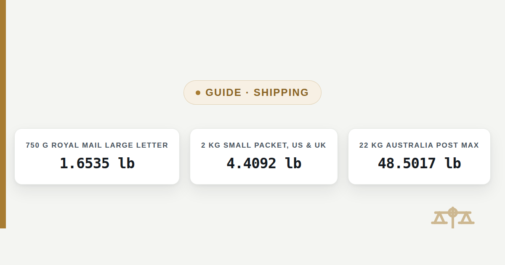

Shipping Weight Brackets: US, UK, Canada & Australia
Four postal systems, four sets of weight brackets. Here is every boundary converted to both grams and pounds, so a package weight in either unit shows exactly which bracket it falls into.

Postal weight brackets are not the same size from one country to the next: a Royal Mail large letter tops out at 750 grams (1.6535 pounds), while a USPS First-Class Package International Service item can weigh up to 1,814.37 grams (4 pounds) and still count as the lightest international bracket. This guide converts every major bracket boundary from four postal systems into both grams and pounds, and gives the rounding rule each one uses. It gives the unit conversion only — confirm current pricing on the carrier's own site before shipping, since brackets and rates both change over time.
The quick answer: brackets differ by country, not just by weight
A package that clears the lightest bracket in one country can land in a heavier, costlier bracket in another, because each postal system sets its own boundaries. The table below lines up the four systems covered here — USPS (US), Royal Mail (UK), Canada Post and Australia Post — so a single weight in grams or pounds can be checked against all four at once.
Weight brackets by country, in grams and pounds
Each row is the maximum weight for that service tier, converted at the exact factor of 453.59237 grams per pound. Brackets and service names change over time, so treat this as the unit conversion for whatever bracket your carrier currently lists, not as a guarantee that these exact tiers are still current when you ship.
| Country / carrier | Service tier | Maximum weight | In grams | In pounds |
|---|---|---|---|---|
| UK — Royal Mail | Letter | up to 100 g | 100 g | 0.2205 lb |
| UK — Royal Mail | Large letter | up to 750 g | 750 g | 1.6535 lb |
| UK — Royal Mail | Small parcel | up to 2 kg | 2,000 g | 4.4092 lb |
| UK — Royal Mail | Medium parcel | up to 20 kg | 20,000 g | 44.0925 lb |
| US — USPS | First-Class Package International Service | up to 4 lb | 1,814.37 g | 4 lb |
| US — USPS | Priority Mail International | up to 70 lb | 31,751.47 g | 70 lb |
| Canada — Canada Post | Small Packet International | up to 2 kg | 2,000 g | 4.4092 lb |
| Canada — Canada Post | International parcel | up to 30 kg | 30,000 g | 66.1387 lb |
| Australia — Australia Post | Flat-rate satchel/box tiers | up to 5 kg | 5,000 g | 11.0231 lb |
| Australia — Australia Post | Parcel Post (own packaging) | up to 22 kg | 22,000 g | 48.5017 lb |
How each country rounds a weight into a bracket
USPS rounds a package weight up to the next whole pound for domestic and international services alike: a package weighing 3 lb 4 oz is charged at the 4 lb bracket, not 3 lb. Some lightweight USPS Ground Advantage items instead round up to the next ounce increment (4 oz, 8 oz, 12 oz, 15.999 oz) rather than a full pound. Royal Mail, Canada Post and Australia Post all size a package against their published gram or kilogram tiers the same way: any weight over a tier's stated maximum moves the package into the next tier up, so a 2,100 gram package in the UK falls outside the 2 kg small parcel tier even though it is only 100 grams over.
Carriers may also bill by dimensional weight — a figure calculated from a package's length, width and height rather than its scale weight — and charge whichever is higher. That calculation is separate from the gram-to-pound conversion on this page and is worth checking directly with the carrier for an oversized but light package, since a large, mostly empty box can be billed as if it were much heavier than it actually weighs.
Worked example: where a 3.2 kg parcel lands in each country
3,200 grams is 7.0548 pounds. Here is which bracket that weight falls into under each system in the table above:
3,200 g ÷ 453.59237 = 7.0548 lb
UK (Royal Mail): over the 2 kg small parcel max → falls in the medium parcel tier (up to 20 kg)
US (USPS): over the 4 lb First-Class Package Intl. max → falls under Priority Mail International (up to 70 lb)
Canada (Canada Post): over the 2 kg Small Packet Intl. max → falls under the international parcel tier (up to 30 kg)
Australia (Australia Post): over the 5 kg flat-rate max → falls under Parcel Post priced by weight or cubic weight (up to 22 kg)
UK (Royal Mail): over the 2 kg small parcel max → falls in the medium parcel tier (up to 20 kg)
US (USPS): over the 4 lb First-Class Package Intl. max → falls under Priority Mail International (up to 70 lb)
Canada (Canada Post): over the 2 kg Small Packet Intl. max → falls under the international parcel tier (up to 30 kg)
Australia (Australia Post): over the 5 kg flat-rate max → falls under Parcel Post priced by weight or cubic weight (up to 22 kg)
The same physical package, unchanged, sits in a different named tier in every country simply because the tier boundaries are set at different weights. Converting the actual weight to both grams and pounds first, then checking it against the current bracket table on the carrier's own site, is the only reliable way to know which tier applies before shipping.
Related guides
This page compares bracket boundaries across countries. Two related guides cover other parts of the shipping weight question:
US carrier rounding in detail
How USPS and other US carriers round a scale weight up to the next whole pound, with the bracket boundaries laid out on their own.
Read the guide →Grams to pounds conversion chart
A general reference table from 100 g to 10,000 g for any weight not covered by a specific bracket above.
Read the chart →Frequently asked questions
Does USPS round package weight up to the next pound?
Yes. USPS rounds a package up to the next whole pound for both domestic and international services, so a package weighing 3 lb 4 oz (1,474.18 g) is charged at the 4 lb (1,814.37 g) bracket. Some lightweight USPS Ground Advantage items round to the next ounce increment instead of a full pound.
Why was my package charged for more weight than it actually weighs?
Two separate things can push a billed weight above the scale weight: rounding up to the next bracket (covered above), and dimensional weight, where a carrier calculates a weight from the package's length, width and height and bills whichever figure is higher. A large, lightly packed box can be billed at a higher weight than its actual scale reading for this reason.
How many grams is the Royal Mail large letter weight limit?
The Royal Mail large letter limit is 750 grams, which is 1.6535 pounds. Above that weight, an item no longer qualifies as a large letter and is priced as a small parcel instead, which has its own 2 kg (4.4092 lb) maximum.
What is the weight limit for USPS First-Class Package International Service?
The maximum weight for USPS First-Class Package International Service is 4 pounds, which is 1,814.37 grams. A package over that weight moves up to Priority Mail International, which has a 70 pound (31,751.47 gram) maximum.
What is the maximum weight for a Canada Post international parcel?
A Canada Post international parcel has a maximum weight of 30 kilograms, which is 66.1387 pounds. Canada Post's lighter Small Packet International service is capped much lower, at 2 kilograms (4.4092 pounds).
What is Australia Post's maximum parcel weight?
Sending a parcel with your own packaging through Australia Post's Parcel Post service allows up to 22 kilograms, which is 48.5017 pounds. Australia Post's flat-rate satchels and boxes are capped lower, at 5 kilograms (11.0231 pounds), before Parcel Post pricing by weight or cubic weight applies.
Sources
- USPS Postal Explorer, International Mail Manual — country price groups and weight limits
- Royal Mail, Size & Weight Guide — parcels, letters and envelopes
- Canada Post, Parcel Services — U.S. and International — size and weight restrictions
- Australia Post, Size and Weight Guidelines